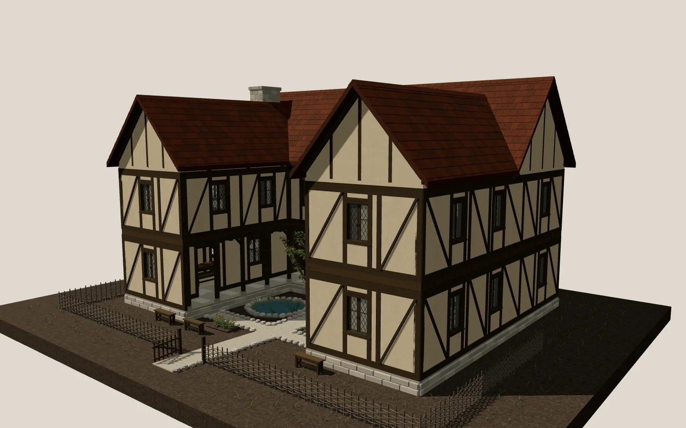
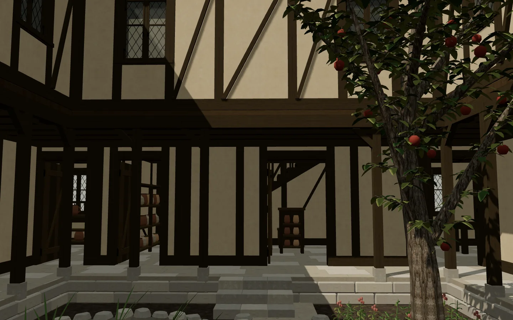
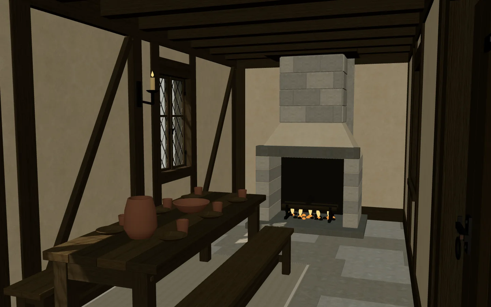
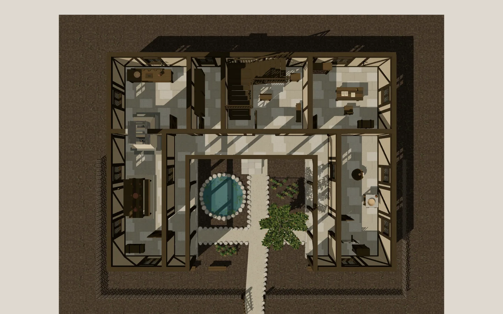
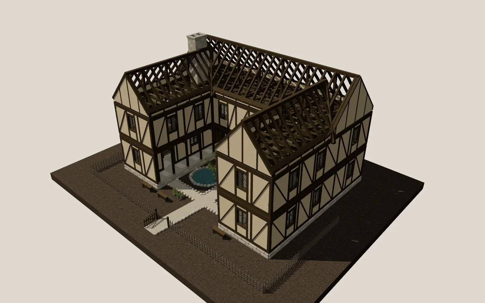

A medieval manor, written as source and built in your browser.
AutoMovie moves and forms characters and objects through LLM function calling, then validates and renders them with a deterministic engine. Its first public showcase is a baron's timber-framed manor: sixteen rooms, a courtyard garden, and every beam, tile, and casement generated from authored code the moment the page opens.





What you are looking at
The manor is a finished AutoMovie production. A coding agent
authored it as ordinary source files under
experimental/medieval-baron-manor: procedural models
for the frame, roof, joinery, furnishings, and garden; a material
file binding seven albedo textures by physical metres; and an
instance definition that finds every repeated member and places it
once as a shared prototype. Nothing is sculpted or scanned.
The viewer runs that source directly. It decodes the textures, derives the shared prototypes, builds the scene, and then lets you fly through it or jump between the observation views the author framed while reviewing the house. What you see is the blocking pass AutoMovie is for: staging, proportion, and placement that are correct and reproducible, not a photoreal render.